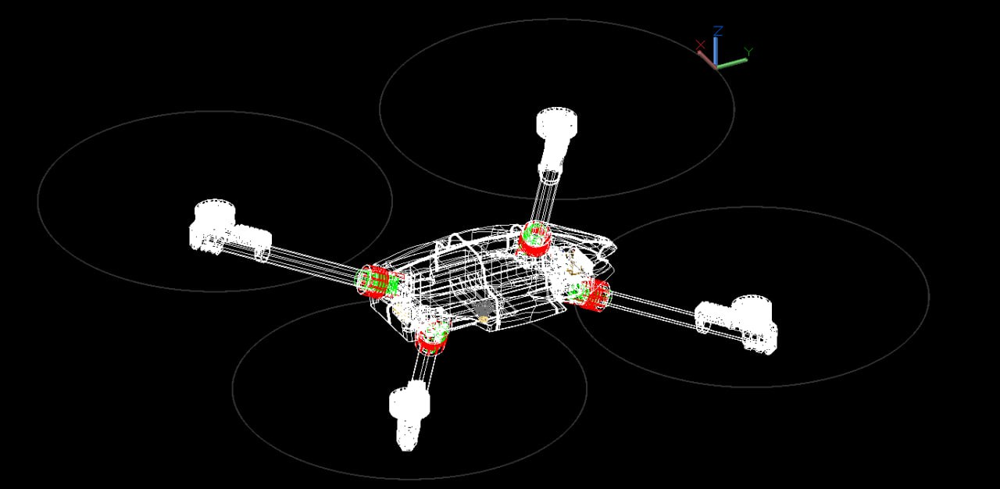

Advanced heavy-lift aerial platform in development
Developed for industrial payload transport, rugged-terrain logistics, emergency support, and other large-payload field missions.
Hevi represents InSky’s long-range heavy-lift direction. It is being developed to expand what unmanned aircraft can do in missions where helicopters, cranes, or difficult ground transport are normally required.

200 kg target for useful and reliable operation
Public-facing positioning for Hevi currently centers on a 200 kg payload target for useful and reliable operation.
At the current design stage, the more practical near-term path is below that full target while the compact heavy-lift architecture continues to evolve.
Target missions
- Industrial lifting and logistics
- Temporary crane-replacement work
- Cargo movement over rugged terrain
- Emergency resupply
- Disaster response support
Heavy-lift utility depends on deployability
Heavy-lift UAVs become valuable when they can replace expensive, slow, or terrain-limited logistics methods with something more flexible and more deployable.
Hevi is being developed around that opportunity.
Not raw lift alone
InSky’s heavy-lift ambition is based on useful payload capability, compactness, field deployability, and a more practical heavy-lift aircraft architecture.
That matters because many heavy-lift systems become operationally awkward before they become commercially practical.
Strategically important, not the lead near-term product
Hevi V2 is currently in development as a flight-test article. It remains an important part of InSky’s long-term direction, while Legal remains the company’s lead near-term commercial platform.
Discuss a mission